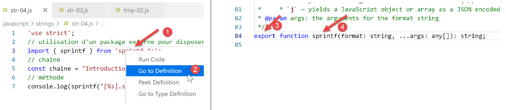
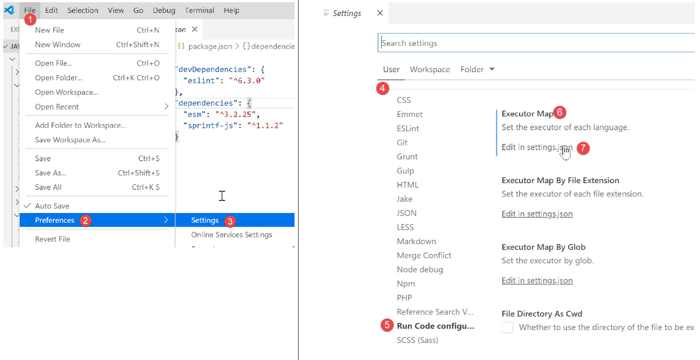

6. Tekenreeksen
De tekenreeksen in JavaScript lijken sterk op die in PHP.

6.1. script [str-01]
Het eerste wat je moet begrijpen, is dat een tekenreeks, zodra deze is aangemaakt, niet meer kan worden gewijzigd. Er zijn tal van methoden om een nieuwe tekenreeks te genereren op basis van de oorspronkelijke tekenreeks, maar deze blijft altijd ongewijzigd. Bovendien kan een tekenreeks van twee soorten zijn:
- [string] wanneer deze wordt geïnitialiseerd met een letterlijke tekenreeks;
- [object] wanneer deze wordt aangemaakt als een instantie van de klasse [String];
''use strict';
// de tekenreeksen zijn alleen-lezen (ze kunnen niet worden gewijzigd)
// een tekenreeks
const chaîne1 = "abcd ";
// type
console.log("typeof(chaîne1)=", typeof (chaîne1));
// teken nr. 2
console.log("chaîne1[2]=", chaîne1[2]);
// veroorzaakt een fout
chaîne1[2] = "0";
Uitvoering
[Running] C:\myprograms\laragon-lite\bin\nodejs\node-v10\node.exe -r esm "c:\Temp\19-09-01\javascript\strings\str-01.js"
typeof(chaîne1)= string
chaîne1[2]= c
c:\Temp\19-09-01\javascript\strings\str-01.js:1
TypeError: Cannot assign to read only property '2' of string 'abcd '
at Object.<anonymous> (c:\Temp\19-09-01\javascript\strings\str-01.js:12:12)
at Generator.next (<anonymous>)
6.2. script [str-02]
Dit script laat zien dat een tekenreeks op twee manieren kan worden samengesteld.
''use strict';
// er zijn twee soorten tekenreeksen
// een letterlijke tekenreeks
const chaîne1 = "abcd ";
// type
console.log("typeof(chaîne1)=", typeof (chaîne1));
// een String-instantie
const chaîne2 = new String("xyzt");
// type
console.log("typeof(chaîne2)=", typeof (chaîne2));
// andere schrijfwijze (zonder new) – type [string] en niet [object]
const chaîne3 = String("12 34");
// type
console.log("typeof(chaîne3)=", typeof (chaîne3));
// het type [string] en het type [object] bieden dezelfde methoden, namelijk die van de klasse String
console.log("chaîne1.length=", chaîne1.length);
console.log("chaîne2.length=", chaîne2.length);
Opmerkingen
- regel 6: de gebruikelijke methode om een tekenreeks te definiëren. [chaîne1] zal van het type [string] zijn;
- regel 10: je kunt een tekenreeks samenstellen met behulp van de constructor van de klasse [String]. [chaîne2] zal van het type [object] zijn;
Uitvoering
[Running] C:\myprograms\laragon-lite\bin\nodejs\node-v10\node.exe "c:\Temp\19-09-01\javascript\strings\str-02.js"
typeof(chaîne1)= string
typeof(chaîne2)= object
typeof(chaîne3)= string
chaîne1.length= 5
chaîne2.length= 4
Het type [string] beschikt over de methoden van de klasse [String].
6.3. script [str-03]
Dit script toont een specifieke tekenreeks met variabele-interpolatie.
'use strict';
// string
const chaîne = "Introduction à Javascript par l'exemple";
// tekenreeks met variabele-interpolatie
const str = `[${chaîne}].substr(3, 2)=` + chaîne.substr(3, 2)
console.log(str);
Opmerkingen
- regel 6: het is mogelijk om tekenreeksen te hebben die ${variabele} bevatten, die worden vervangen door de waarde van de variabele. Dit volgt dezelfde logica als de $-variabelen in de tekenreeksen van PHP. Let op de notatie van zo’n tekenreeks: deze wordt omgeven door een ‘backstick’ of omgekeerde apostrof (AltGr-7 op een Frans toetsenbord);
Uitvoering
[Running] C:\myprograms\laragon-lite\bin\nodejs\node-v10\node.exe -r esm "c:\Temp\19-09-01\javascript\strings\tempCodeRunnerFile.js"
[Introduction à Javascript par l'exemple].substr(3, 2)=ro
6.4. script [str-04]
De string met variabele-interpolatie schiet tekort. Het is namelijk niet mogelijk om een uitdrukking in de plaats van de variabele in de uitdrukking ${variabele} te zetten. Voor wie in C heeft geprogrammeerd: er gaat niets boven functies als [printf, sprintf] om opgemaakte strings te schrijven of samen te stellen. Honderden ontwikkelaars hebben duizenden JavaScript-pakketten ontwikkeld die samen een enorm ecosysteem vormen. Wanneer er een behoefte is die niet standaard door JavaScript wordt vervuld, is het tijd om een pakket te zoeken dat hieraan voldoet. Hiervoor gebruiken we de pakketbeheerder [npm]. Deze beschikt over een optie [search] waarmee je een tekenreeks in de beschrijving van de pakketten kunt zoeken. [npm] geeft de lijst met pakketten weer die aan de zoekopdracht voldoen. We gaan dus op zoek naar de tekenreeks [sprintf] in de beschrijving van de pakketten:

- in de kolom [4], de trefwoorden van de pakketten uit de kolom [3];
- in de kolom [5] de beschrijving van de pakketten uit de kolom [3];
De volgende stap is om naar de website van de tool [npm], [https://www.npmjs.com/] te gaan en de beschrijving van de pakketten te lezen:

In [3] bekijk je de lijst met pakketten en kies je er een uit.

In de beschrijving van het pakket vind je informatie over het installeren en gebruiken ervan:

We installeren het pakket [sprintf-js] in een terminal van [VSCode]:

Deze installatie wijzigt het bestand [package.json] dat zich in de hoofdmap van de map [javascript] [2] bevindt:

Hierboven is te zien dat het pakket is geïnstalleerd in de [dependencies], d.w.z. in de pakketten die nodig zijn voor de uitvoering van het project. Ter herinnering: in [devDependencies] worden de benodigde pakketten uitsluitend tijdens de ontwikkeling van het project geplaatst. Ze worden niet gebruikt tijdens de uitvoering. Dit verschil is belangrijk wanneer de definitieve versie van het project moet worden gemaakt voor de ingebruikname. Er bestaan tools om:
- alle jS-bestanden die nodig zijn voor de uitvoering samen te voegen tot één enkel bestand. De [devDependencies]-pakketten worden dus niet opgenomen in dit uiteindelijke bestand;
- dit bestand te minificeren, d.w.z. de bestandsgrootte zo klein mogelijk te maken. Hiervoor worden bijvoorbeeld alle opmerkingen verwijderd;
- de code te ‘versluieren’ om deze moeilijk begrijpbaar te maken. Zo worden de variabelen ‘tarief’, ‘salaris’ en ‘belasting’ bijvoorbeeld vervangen door de variabelen ‘a’, ‘b’ en ‘c’;
- andere optimalisaties doorvoeren;
Deze optimalisatie van het uiteindelijke bestand van een project jS wordt gebruikt bij het programmeren van websites. Een webapplicatie kan afhankelijk zijn van een groot aantal JavaScript-bestanden. Het laden hiervan door een browser kan het weergeven van de eerste pagina van de applicatie vertragen. De bovenstaande optimalisatie is bedoeld om deze laadtijd te verbeteren. Als de laadtijd door gebruikers als te lang wordt ervaren, zal de applicatie niet worden gebruikt.
Nu we beschikken over het pakket [sprintf-js], moeten we het gaan gebruiken. Dit is het script [str-04]:
'use strict';
// gebruik van een extern pakket om de functie sprintf te kunnen gebruiken
import { sprintf } from 'sprintf-js';
// tekenreeks
const chaîne = "Introduction à Javascript par l'exemple";
// methode
console.log(sprintf("[%s].substr(3,2)=[%s]", chaîne, chaîne.substr(3, 2)));
Met ECMAScript 6 gebruiken we het sleutelwoord [import] om een object te importeren dat door een pakket is geëxporteerd. Om te zien wat het pakket exporteert, kun je de code ervan bekijken:

- in [1], klik met de rechtermuisknop op het geïmporteerde pakket;
- in [2] wil je de definitie ervan bekijken;
- in [3-4] zien we dat het pakket een functie exporteert met de naam [sprintf];
De functie [sprintf] uit het pakket [sprintf-js] wordt geïmporteerd met de instructie:
import { sprintf } from 'sprintf-js';
De volledige code:
'use strict';
// gebruik van een extern pakket om de functie sprintf te kunnen gebruiken
import { sprintf } from 'sprintf-js';
// string
const chaîne = "Introduction à Javascript par l'exemple";
// methode
console.log(sprintf("[%s].substr(3,2)=[%s]", chaîne, chaîne.substr(3, 2)));
levert de volgende resultaten op:
[Running] C:\myprograms\laragon-lite\bin\nodejs\node-v10\node.exe "c:\Temp\19-09-01\javascript\strings\str-04.js"
c:\Temp\19-09-01\javascript\strings\str-04.js:3
import { sprintf } from 'sprintf-js';
^
SyntaxError: Unexpected token {
at new Script (vm.js:79:7)
at createScript (vm.js:251:10)
at Object.runInThisContext (vm.js:303:10)
at Module._compile (internal/modules/cjs/loader.js:657:28)
Regel 3: de instructie [import] wordt niet begrepen. Dit komt doordat versie 10.15.1 van [node.js] die in deze cursus wordt gebruikt (september 2019) nog niet voldoet aan de norm ECMAScript voor het importeren van pakketten die modules worden genoemd. In 2019 voldoet [node.js] aan een modulestandaard genaamd CommonJS. De integratie van de ECMAScript-modules door [node.js] staat gepland voor 2020. Ook hier zijn ontwikkelaars aan de slag gegaan en hebben ze pakketten gemaakt waarmee de modules ES6 nu al (in 2019) samen met [node.js] kunnen worden gebruikt.
We gaan een pakket gebruiken met de naam [esm] (ECMAScript-modules). We installeren dit op een terminal van het project [javascript]:

In [4] zien we dat de installatie van het pakket [esm] [1-3] het bestand [javascript/package.json] heeft gewijzigd.
We zijn nog niet klaar. Om ervoor te zorgen dat de module [esm] door [node.js] wordt gebruikt, moet deze laatste worden gestart met het argument [-r esm].
We passen daarom de configuratie van de extensie [Code Runner] van [VSCode] aan:


In [11] voegen we het argument [-r esm] toe en slaan we de configuratie op (Ctrl-S).
Nu kunnen we het script [str-04] uitvoeren:
'use strict';
// gebruik van een extern pakket om de functie sprintf te kunnen gebruiken
import { sprintf } from 'sprintf-js';
// string
const chaîne = "Introduction à Javascript par l'exemple";
// substr-methode
console.log(sprintf("[%s].substr(3,2)=[%s]", chaîne, chaîne.substr(3, 2)));

6.5. script [str-05]
Dit staat er in de documentatie over de functie [sprintf]:
De plaatshouders in de opmaakstring worden aangeduid met % en worden gevolgd door een of meer van deze elementen, in deze volgorde:
- Een optioneel getal gevolgd door een $-teken dat aangeeft welke argumentindex voor de waarde moet worden gebruikt. Indien niet gespecificeerd, worden de argumenten in dezelfde volgorde geplaatst als de plaatshouders in de invoerreeks.
- Een optioneel +-teken dat ervoor zorgt dat het resultaat bij numerieke waarden wordt voorafgegaan door een plus- of minteken. Standaard wordt alleen het -teken gebruikt bij negatieve getallen.
- Een optionele opvulspecificatie die aangeeft welk teken moet worden gebruikt voor opvulling (indien opgegeven). Mogelijke waarden zijn 0 of elk ander teken voorafgegaan door een ' (enkel aanhalingsteken). Standaard wordt er met spaties opgevuld.
- Een optioneel minteken (-), dat ervoor zorgt dat `sprintf` het resultaat van deze plaatshouder links uitlijnt. Standaard wordt het resultaat rechts uitgelijnd.
- Een optioneel getal dat aangeeft hoeveel tekens het resultaat moet bevatten. Als de terug te geven waarde korter is dan dit getal, wordt het resultaat opgevuld. Bij gebruik met de typespecificatie j (JSON) geeft de opvullengte de tabgrootte aan die wordt gebruikt voor inspringing.
- Een optionele precisie-modificator, bestaande uit een . (punt) gevolgd door een getal, die aangeeft hoeveel cijfers er moeten worden weergegeven voor drijvende-kommagetallen. Bij gebruik met de typespecificatie g geeft deze het aantal significante cijfers aan. Bij gebruik op een tekenreeks zorgt deze ervoor dat het resultaat wordt afgekapt.
- Een typespecificatie die een van de volgende kan zijn:
- % — levert een letterlijk %-teken op
- b — levert een geheel getal op als binair getal
- c — levert een geheel getal op als het teken met die waarde
- d of i — levert een geheel getal op als een decimaal getal met teken
- e — levert een drijvende-kommagetal op in wetenschappelijke notatie
- u — levert een geheel getal op als een decimaal getal zonder teken
- f — levert een float op zoals die is; zie de opmerkingen over precisie hierboven
- g — levert een float op zoals deze is; zie de opmerkingen over precisie hierboven
- o — levert een geheel getal op als octaal getal
- s — levert een tekenreeks op zoals deze is
- t — levert 'true' of 'false' op
- T — levert het type van het argument1 op
- v — levert de primitieve waarde van het opgegeven argument op
- x — levert een geheel getal op als een hexadecimaal getal (kleine letters)
- X — levert een geheel getal op als een hexadecimaal getal (hoofdletters)
- j — levert een JavaScript-object of -array op als een JSON-gecodeerde tekenreeks
Het script [script-05] implementeert enkele van deze formaten:
'use strict';
// gebruik van een extern pakket om de functie sprintf te kunnen gebruiken
import { sprintf } from 'sprintf-js';
// tekenreeks
const chaîne = "Javascript";
// tekenreeksen
console.log(sprintf("[%s, %%s]=>[%s]", chaîne, chaîne));
console.log(sprintf("[%s, %%20s]=>[%20s]", chaîne, chaîne));
console.log(sprintf("[%s, %%-20s]=>[%-20s]", chaîne, chaîne));
// gehele getallen
console.log(sprintf("[%d, %%d]=>[%d]", 10, 10));
console.log(sprintf("[%d, %%4d]=>[%4d]", 10, 10));
console.log(sprintf("[%d, %%-4d]=>[%-4d]", 10, 10));
console.log(sprintf("[%d, %%04d]=>[%04d]", 10, 10));
// reële getallen
console.log(sprintf("[%f, %%f]=>[%f]", -10.5, -10.5));
console.log(sprintf("[%f, %%10.2f]=>[%10.2f]", -10.5, -10.5));
console.log(sprintf("[%f, %%-10.2f]=>[%-10.2f]", -10.5, -10.5));
console.log(sprintf("[%f, %%010.3f]=>[%010.3f]", -10.5, -10.5));
// json
console.log(sprintf("personne (%%j)=%j", { nom: "mathieu", âge: 34 }));
// type
console.log(sprintf("type personne (%%T)=%T", { nom: "mathieu", âge: 34 }));
// booleaanse waarde
console.log(sprintf("booléen (%%t)=%t", 4 === 4));
Uitvoering
[Running] C:\myprograms\laragon-lite\bin\nodejs\node-v10\node.exe -r esm "c:\Data\st-2019\dev\es6\javascript\strings\str-05.js"
[Javascript, %s]=>[Javascript]
[Javascript, %20s]=>[ Javascript]
[Javascript, %-20s]=>[Javascript ]
[10, %d]=>[10]
[10, %4d]=>[ 10]
[10, %-4d]=>[10 ]
[10, %04d]=>[0010]
[-10.5, %f]=>[-10.5]
[-10.5, %10.2f]=>[ -10.50]
[-10.5, %-10.2f]=>[-10.50 ]
[-10.5, %010.3f]=>[-00010.500]
personne (%j)={"nom":"mathieu","âge":34}
type personne (%T)=object
booléen (%t)=true
6.6. script [str-06]
Het script [str-06] toont enkele methoden van de klasse [String] die ook op het type [string] kunnen worden gebruikt:
'use strict';
// gebruik van een extern pakket om de functie sprintf te kunnen gebruiken
import { sprintf } from 'sprintf-js';
// tekenreeks
const chaîne = " Introduction à Javascript ";
// enkele methoden
// substr(10,2): 2 tekens vanaf nummer 10
console.log(sprintf("[%s].substr(10,2)=[%s]", chaîne, chaîne.substr(10, 2)));
// trim: verwijderen van spaties aan het begin en einde van de tekenreeks (spatie=\b \t \r \n \f)
console.log(sprintf("[%s].trim()=[%s]", chaîne, chaîne.trim()));
// toLowerCase: omzetten naar kleine letters
console.log(sprintf("[%s].toLowerCase=[%s]", chaîne, chaîne.toLowerCase()));
// toUpperCase: omzetting naar hoofdletters
console.log(sprintf("[%s].toUpperCase=[%s]", chaîne, chaîne.toUpperCase()));
// indexOf: positie van een gezocht e tekenreeks in de tekenreeks, -1 als de subreeks niet bestaat
console.log(sprintf("[%s].indexOf('Java')=[%s]", chaîne, chaîne.indexOf('Java')));
console.log(sprintf("[%s].trim().indexOf('abcd')=[%s]", chaîne, chaîne.indexOf('abcd')));
// includes: waar als de gezochte tekenreeks in de tekenreeks voorkomt
console.log(sprintf("[%s].includes('Java')=[%s]", chaîne, chaîne.includes('Java')));
// length: lengte van de tekenreeks – dit is geen methode maar een eigenschap
console.log(sprintf("[%s].length=[%s]", chaîne, chaîne.length));
// slice (7,10): tekenreeks van teken 7 tot en met 9
console.log(sprintf("[%s].slice(7,10)=[%s]", chaîne, chaîne.slice(7, 10)));
// match: zoekt een uitdrukking in de tekenreeks – deze uitdrukking kan een reguliere uitdrukking zijn
// /intro/i: reguliere uitdrukking die verwijst naar de tekenreeks [intro] in hoofdletters of kleine letters
// geeft de gevonden tekenreeks weer
console.log(sprintf("[%s].match(/intro/i)=[%s]", chaîne, chaîne.match(/intro/i)));
// vervangen: vervangt tekenreeks1 door tekenreeks2 in tekenreeks
// vervangt de eerste keer dat i voorkomt door x
console.log(sprintf("[%s].replace('i','x')=[%s]", chaîne, chaîne.replace('i', 'x')));
// vervangt alle voorkomens van i door x
// /i/g is een reguliere expressie die verwijst naar alle (g) voorkomens van i
console.log(sprintf("[%s].replace(/i/g,'x')=[%s]", chaîne, chaîne.replace(/i/g, 'x')));
// split: verdeelt de tekenreeks in woorden, gescheiden door de split-parameter
// geeft de array van deze woorden terug
// /\s*/: woorden gescheiden door 0 of meer spaties
console.log(sprintf("[%s].split(/\\s*/)=[%s]", chaîne, chaîne.split(/\s*/)));
// /\s+/: woorden gescheiden door één of meer spaties
console.log(sprintf("[%s].split(/\\s+/)=[%s]", chaîne, chaîne.split(/\s+/)));
Uitvoering
[Running] C:\myprograms\laragon-lite\bin\nodejs\node-v10\node.exe -r esm "c:\Data\st-2019\dev\es6\javascript\strings\str-06.js"
[ Introduction à Javascript ].substr(10,2)=[ti]
[ Introduction à Javascript ].trim()=[Introduction à Javascript]
[ Introduction à Javascript ].toLowerCase=[ introduction à javascript ]
[ Introduction à Javascript ].toUpperCase=[ INTRODUCTION À JAVASCRIPT ]
[ Introduction à Javascript ].indexOf('Java')=[17]
[ Introduction à Javascript ].trim().indexOf('abcd')=[-1]
[ Introduction à Javascript ].includes('Java')=[true]
[ Introduction à Javascript ].length=[28]
[ Introduction à Javascript ].slice(7,10)=[duc]
[ Introduction à Javascript ].match(/intro/i)=[Intro]
[ Introduction à Javascript ].replace('i','x')=[ Introductxon à Javascript ]
[ Introduction à Javascript ].replace(/i/g,'x')=[ Introductxon à Javascrxpt ]
[ Introduction à Javascript ].split(/\s*/)=[,I,n,t,r,o,d,u,c,t,i,o,n,à,J,a,v,a,s,c,r,i,p,t,]
[ Introduction à Javascript ].split(/\s+/)=[,Introduction,à,Javascript,]